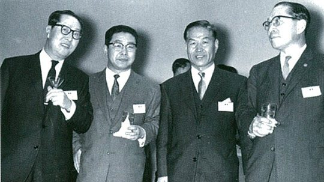
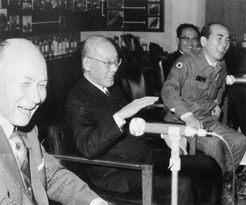
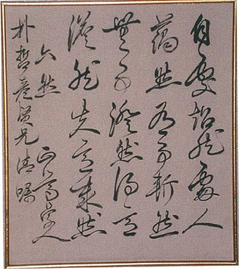

연재일 2014-10-01출처 조선일보 프리미엄조선 연재
일본의 어디서 누구를 만나든 한국 대통령이 가장 신뢰하는 사람이라는 그 천거의 무게와 명찰에 어울리는 인품과 언행을 보여야 하는 박태준은 1964년 1월 도쿄 하네다 공항에 내렸다. 오노가 일본 중의원 의장, 내각 대신 두 명과 같이 기다리고 있었다. 박태준 일행도 넷이었다. 김종필이 천거한 두 명과 회계담당 최정렬.
1964년 벽두의 일본은 도쿄올림픽 준비로 해가 뜨고 해가 지는 나라였다. 도쿄 중심가에서 하네다 공항까지는 동양 최초의 모노레일이 깔리고, 도쿄와 오사카 구간에는 시속 250킬로미터의 초고속 열차운행을 위한 광궤철로(신간선) 부설공사가 진행되고 있었다. 도쿄의 겉모습은 패전의 악몽에서 완전히 벗어나 있었다. 곳곳에 건설용 크레인이 허공을 지키고, 화장실을 수세식으로 개조하는 집들이 급증하고, 텔레비전을 흑백에서 컬러로 바꾸는 시험방송도 시작했다. 한마디로 일본은 융성 대로에 진입한 것 같았다.
우선 박태준은 그런 모습이 부러웠다. 우리도 하루빨리 분발해서 이렇게 일어서야 한다는 결의가 분노처럼 솟구치기도 했다. 그는 잘 알고 있었다. 일본이 한국전쟁의 그 처절한 고통을 경제재건의 호기로 활용했다는 것을, 일본이 미국의 허리를 부둥켜안았다는 것을. 그리고 그는 한국전쟁을 부흥 기회로 활용한 1950년대 일본사회에 ‘진무경기(神武景氣)’라는 신조어가 유행했다는 것도 알고 있었다.
‘진무’는 일본국 첫 임금의 원호다. 얼마나 경기가 좋았으면 거룩한 이름으로 불렀으랴. 그때 가슴에 사무쳤던 통한을 박태준은 그로부터 40년이나 지난 2004년 6월에야 좀 시원하게 털어놓는데, ‘한일국교정상화 40주년 기념 국제학술대회’에서 한국 측 기조연설을 맡아 다음과 같이 회고한 것이다.
<일본 노인들은 1950년대 ‘진무경기(神武景氣)’라는 호황시절을 잘 기억할 것입니다. ‘진무’는 일본국 첫 번째 임금의 원호 아닙니까? 진무경기란 말은 ‘유사 이래 최고 경기’라는 민심을 반영했던 것입니다. 실제로 진무경기는 막강한 일본경제 성장의 기반이 되었습니다. 한국전쟁이란 특수경기가 일본경제 회생에 신묘한 보약으로 쓰였던 것입니다.
오죽했으면 한국 지식인들이 ‘한국전쟁은 일본경제를 위해 일어났다’는 자탄을 했겠습니까? 그 쓰라린 목소리는 전쟁 도발자를 향한 용서 못할 원망도 담았지만, 분단의 근원에 대한 일본의 책임의식과 한국경제를 도와야할 일본의 도덕의식을 촉구하고 있었습니다.>
김유택 부총리(맨 왼쪽) 등과 함께 한 박철언 씨(왼쪽 두번째).
1964년 1월, 박태준은 도쿄에서 사흘째 되는 한낮에 동행들과 따로 떨어져 박철언을 만나러 갔다. 그의 도움으로 5‧16군정 제1호 출국허가를 받아 도쿄로 돌아온 박철언은 미(美) 극동군 총사령부 문관을 사임한 뒤 1962년부터는 ‘대방(大邦)’이란 회사를 차려 사업에 열중하고 있었다.
박태준은 일본 집권세력의 실력자들과 제대로 만나기 위해서는 먼저 야스오카 마사아쓰(安岡正篤)의 이해와 협조를 얻어야 한다고 판단했다. 미리 연락을 받은 박철언이 야스오카의 최측근으로서 그가 회장으로 있는 전국사우협회(全國師友協會)의 부회장도 맡았던 야기 노부오와 상의하여 만반의 준비를 갖추고 있었다. 장면 총리의 특사 유동진, 박정희의 전권대사 이용희, 그리고 박정희의 특사 박태준.
이들이 거쳐야 하는 첫 관문과 같은 존재, 야스오카는 어떤 인물인가? 한국어와 일본어로 출간된 박철언의 자서전 『나의 삶, 역사의 궤적』에 단아한 정리가 나오는데, 야스오카는 몇 년 뒤 포항제철 프로젝트 성사(成事)에도 매우 중요한 역할을 해준다.
<야스오카는 1904년 일본 중부지방의 호족 홋타씨 가문에서 태어났다. 소학교 시절에 『논어』, 『맹자』, 『중용』, 『대학』 등 사서를 배워 익혔다. 나아가 『태평기』, 『일본외사』, 『십팔사략』, 『삼국지』 등 한서를 탐독하기에 이르렀다. 일본의 일고, 동대라는 최고 엘리트 길을 걸었다. 그가 고등학교 재학 중에 쓴 장편의 논문 「소동파의 생애와 인격」이 동경대학 학지 『동대문학』에 실린 적이 있다.
그 논문은 학계의 관심 대상이었고, 세간에 화제가 되었다. 읽는 이들은 동경대학의 전공 교수가 쓴 논문으로 믿었다고 한다. 그는 1922년 대학을 졸업했는데, 재학 중에 출판한 저서 『중국의 사상 및 인물 강화』는 당시 학계나 경제계에서 경탄의 대상이 되었다.>
1978년 5월 안동 도산서원을 방문한 야스오카 씨(가운데), 야기 노부오 씨, 박태준 사장.
흔히 근대일본의 양명학 대가로 널리 알려진 야스오카. 일본 양명학은 ‘행위란 마음의 용(用)’이라는 중국 양명학에서 훨씬 더 나아가 경세치용(經世致用), 사회적 실천의 지행합일을 이념으로 삼았다. 전후 일본에서 야스오카의 영향력은 대단했다. 두 가지 사례만 보아도 짐작할 수 있다.
재임 기간 7년 8개월로 전후(戰後) 최장수 총리를 기록한 사토 에이사쿠(佐藤英作)는 야스오카를 스승으로 모시고 월 1회 또는 2회 관저로 초대했다. 노벨문학상 후보에 올라 그때 한국 독자들에게도『금각사』로 낯설지 않은 소설가 미사마 유키오(三島由紀夫)는 야스오카의 저서를 읽고 감명을 받은 편지에서 ‘지행합일 실천’의 의지를 내비쳤으며, 실제로 그는 ‘천황 친정’의 뜻을 이루려는 결사의지의 표명으로 할복을 감행했다.
야스오카는 박정희가 가장 신뢰한다며 특파한 젊은 일꾼 박태준을 어떻게 보았을까? 그의 박태준에 대한 첫인상은 미래를 위한 주요 자산이 된다. 두 사람이 초면 대화에서는 일말의 예견도 잡지 못하지만 장차 ‘포항제철의 운명’과 인연이 깊게 걸리는 것이기도 했다. 어떤 신성한 시간은 우주를 자장(磁場)으로 바꾸어 낯선 존재들 간에 인력(引力)을 창조한다고 했던가. 박철언의 자서전이 증언한다.
<나는 박태준을 선도해서 동경 분쿄쿠 하쿠산의 자택으로 야스오카 마사아쓰를 찾았다.
“어서 오십시오. 원방래(遠方來)한 벗을 만나는 기분입니다.”
야스오카는 멀리서 온 벗을 맞아 기쁘다는 고구(古句)가 섞인 말로 박태준을 초면의 어색함 없이 맞았다. 야스오카와 박태준 사이에는 광범위한 문제가 화제로 꽃피었다. 예정시간을 훨씬 넘긴 회견이 계속되었다.
“침착 중후한 인물이오. 마치 큰 바위를 대하는 듯한 무게가 있었소.”
박태준을 만나고 나서 야스오카가 배석했던 야기와 나에게 한 말이었다. 박태준, 야스오카 양자의 이때의 해후는 뒤에 오는 포항제철 건설 문제에서 그 성패를 가늠하는 막중한 역할을 하게 되었다.>
야스오카 씨가 박철언 씨에게 선물한 친필휘호.
박태준은 박정희의 특사로서 일본 정부, 정계, 언론계 요인들과 만나고 다녔다. 그가 식탁 위에 올려놓는 가장 중요한 화제는 한일국교정상회담에 임하는 한국 측의 입장이었다. 또한 그는 산업 시찰을 중시했다. 공부를 하듯이 시설을 살피면서 경제계 인사들과 얼굴을 익혔다. 그러한 박태준의 활동에 대해 이도성의 『실록-박정희의 한일회담』은 다음과 같이 기록하고 있다.
<2월 초 도쿄 아카사카 거리의 한 요정에서 있었던 환영모임엔 자민당의 거두 오노 반보쿠 부총재를 비롯하여 후나다 중의원의장, 시나 외상, 나카가와 의원 등이 참석했다. 박태준은 그 뒤 나카소네 의원(뒤에 총리), 기시 전 총리, 오히라 의원(뒤에 총리), 사토 의원(뒤에 총리) 등 자민당의 실력자들과 자주 만나고 지방을 돌면서 유지들과 접촉했다.
그가 만나본 바로는 기시 전 총리와 오노 부총재가 가장 협조적이었다. 박태준은 자신의 임무를 마친 다음에는 나카가와 의원의 안내를 받으면서 두 달 동안 일본 전국의 산업시설을 돌아다니면서 공부를 했다고 한다. 박태준은 ‘불과 20년 사이에 일본이 이룩한 눈부신 성장의 현장을 가보니 피가 끓어오르는 듯한 느낌을 받았다’는 것이다.>
술자리가 끊이지 않는 만남의 연속. 술자리를 지키는 여성의 유혹도 끊이지 않는 만남의 연속. 그러나 박태준은 ‘박정희의 특사’라는 신분을 잠시도 잊지 않았다. 자신의 사소한 실수마저 박정희에게 누가 된다는 점을 엄정히 인식하고 있었다. 그러한 가운데 박태준은 주 1회 또는 2주 1회 간격으로 외교 행낭을 통해 박정희에게 보고서를 보냈다.
1964년 가을, 경복궁에 단풍이 붉게 물들었을 때 박태준은 청와대로 올라갔다. 박정희가 함박웃음으로 그의 오른손을 잡았다.
“아무리 바빠도 임자가 보낸 보고서는 다 읽었어. 좋은 참고가 됐어. 어때? 미국 유학보다 훨씬 낫지?”
“미국 유학을 못 가봐서 비교는 못하겠습니다만, 머리는 제법 채운 것 같습니다.”
“고생했어.”
박정희가 웃음을 짓는 박태준의 어깨를 툭툭 두들겼다.


